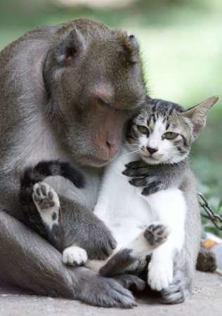

BB has a couple of friends. She likes to keep her circle small because her mental and physical wellbeing is affected by who and what she is around. Look, there goes her cousin, Lucy, the cat, and her boyfriend, George. Lets go say hello!
They seemed to be having a nice time together. BB's mood had an increase after seeing them and saying hello. Both of them were feeling happy, relaxed and comfortable so now BB feels the same way.
